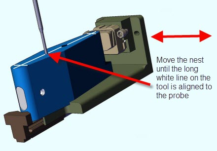

Adjusting Reagent Pipettor Nest
This procedure describes how to mechanically adjust the reagent pipettor probe to the reagent pack in the x-direction.
Required Materials:
- Reagent pack alignment tool
This adjustment applies to instruments with serial numbers 602697 and 900568 and higher. These instruments include slotted reagent storage nests and slotted mounting holes in the reagent storage module.
The reagent storage nest presents the reagent packs to the reagent pipettors. Reagent pipettors contain two pipettors per module.
The adjustments for this module include:
- adjust reagent pipettor to reagent pack in the x-direction

Warning: Because of the remap, this procedure causes all on-board expired packs to become unusable.
-
Open the SPU.
-
Loosen the locking screw.
The locking screw prevents the SPU from swinging outward from the instrument. It is not necessary to remove the screw because the SPU plate is slotted.

-
Pull the spring-loaded captive pin that holds the panel (located under the SPU) to the frame.

-
(For China and Canada Only.) On the front facing the edge of the Framus assembly, install the Chinese and French labels adjacent to the existing English label.
Note: The labels are in the DxI Installation Kit.

-
Loosen the locking screw.
-
Close the SPU.
The SPU is hinged on the left side. The right side is released and can be swung out from the instrument to approximately 45 degrees.Warning: The SPU off-load area slides forward and rearward as the SPU is swung in and out. To prevent damage to the SPU or the off-load area, confirm that nothing obstructs the movement of the off-load area as the SPU is moved.
-
Pull the spring-loaded captive pin to attach the panel (located under the SPU) to the frame.
-
Tighten the bolt that holds the SPU from swinging outward from the instrument (locking screw).

-
Pull the spring-loaded captive pin to attach the panel (located under the SPU) to the frame.